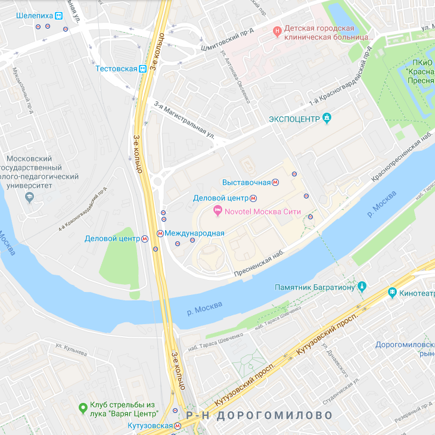

<div class='container-fluid'>
  <div class='row centered'>
    <div class='col-0 col-sm-0 col-md-2 col-lg-2 col-xl-2'></div>
    <div class='col-12 col-sm-12 col-md-8 col-lg-8 col-xl-8 main'>

<div class='col-12 col-sm-12 col-md-12 col-lg-12 col-xl-12 place-page place-page1'>

	<h1>место</h1>

	<p>Москва — столица России и один из субъектов федерации, находится в центре европейской части России.</p>
	<p>Наиболее населённый город России и Европы, один из крупнейших городов мира. Входит в число городов Золотого кольца
		России.</p>
	<p>Город расположился на Москва-реке в среднем течении. Москва стоит на семи холмах, имеет радиальную структуру
		застройки и дорог. Город часто называют «Третьим Римом», следующим за Римом и Константинополем соответственно.</p>

</div>


<div class='col-12 col-sm-12 col-md-12 col-lg-12 col-xl-12 place-page'>

	<h1>как добраться</h1>


	<p id='how'>НА САМОЛЕТЕ:</p>
	<p>
		Шереметьево (SVO) — поезда с Белорусского вокзала, маршрутки и автобусы от метро Речной
		вокзал или Планерная
	</p>
	<p>
		Домодедово (DME) — поезда с Павелецкого вокзала, маршрутки и автобусы от Домодедовская
	</p>
	<p>
		Внуково (VKO) — поезда с Киевского вокзала, маршрутки и автобусы от Юго-Западная
	</p>
	<p>
		Жуковский (ZIA) — автобусы от Котельники, автобусом до ж/д платформы Отдых и до Казанского
		вокзала
	</p>

	<p id='how'>НА ПОЕЗДЕ:</p>
	<p>
		В Москве 9 железнодорожных вокзалов. Семь из них совмещены со станциями метро Кольцевой линии и обслуживают
		подавляющее большинство направлений дальнего следования. Слабо загруженные Рижский и Савёловский вокзалы удалены от
		Кольцевой линии метро на одну станцию. Названия многих вокзалов сразу дают представление о том, куда с них едут,
		однако есть и ряд неочевидных моментов. Более того, в городе нет жёсткой системы, привязывающей вокзал к
		определённому направлению: поезда на юг могут отправляться даже с Белорусского вокзала, если на других не нашлось
		свободного места. Обязательно проверяйте, какой вокзал указан на билете.
	</p>

</div>


<div class='col-12 col-sm-12 col-md-12 col-lg-12 col-xl-12 place-page'>

	<h1 id='minima'>место проведения конференции</h1>

	

	<p>Новотель Москва Сити</p>

	<p>Современный отель Novotel Moscow City удобно расположен в бизнес-центре «Москва-Сити», в 5 минутах
		ходьбы от Экспоцентра. К услугам гостей спа-салон, тренажерный зал, бесплатный Wi-Fi и круглосуточная стойка
		регистрации.
	</p>
	<p>
		В числе удобств элегантных просторных номеров, оформленных в пастельных тонах, кондиционер, телевизор с плоским
		экраном, мини-бар и собственная ванная комната с феном.
	</p>
	<p>
		В ресторане MC Traders подают блюда международной и русской кухни, а в лаундж-баре MC Traders гостям предлагают
		различные напитки и легкие закуски.
	</p>
	<p>
		Гости могут отдохнуть в турецкой бане или сауне, а также посетить массажный кабинет при отеле. Торговый центр
		«Афимолл» расположен в том же здании, а поблизости обустроена смотровая площадка «Москва-Сити». Кремль и Красная
		площадь находятся в 5 км от отеля.
	</p>
	<p>
		Прогулка до станции метро «Деловой центр» занимает всего несколько минут. Расстояние до Белорусского железнодорожного
		вокзала составляет 4,5 км. Оттуда на экспресс-поезде можно за 35 минут доехать до международного аэропорта
		Шереметьево.
	</p>

</div>
</div>
</div>
</div>
